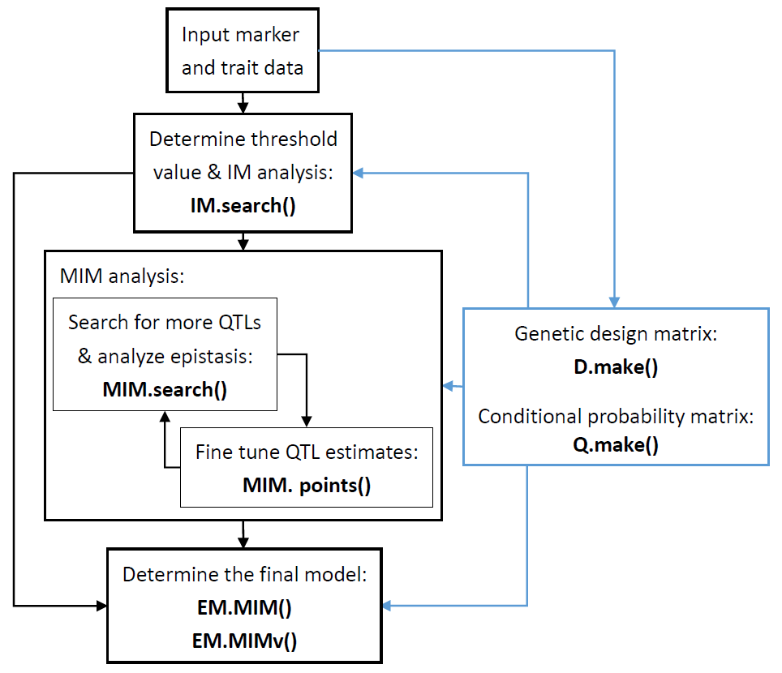
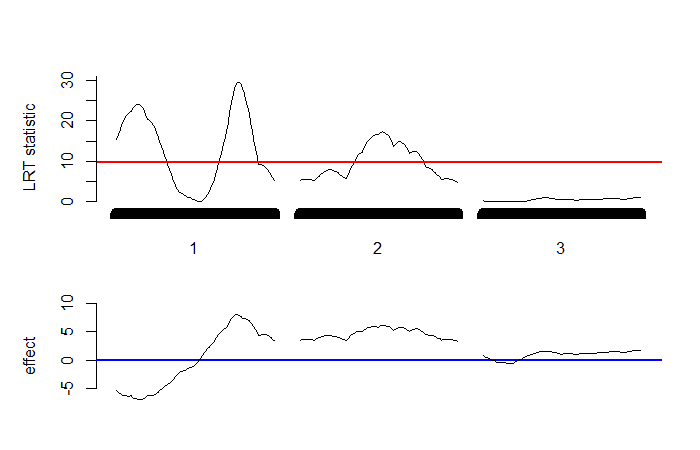
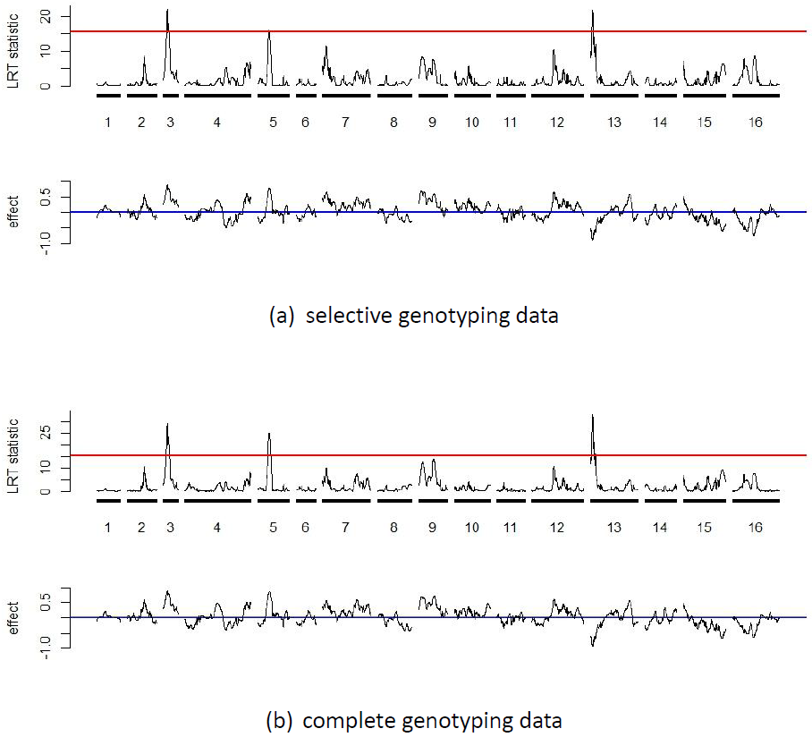
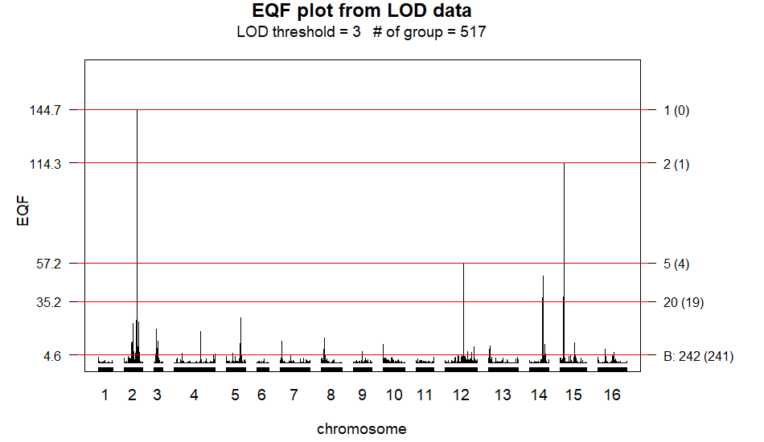
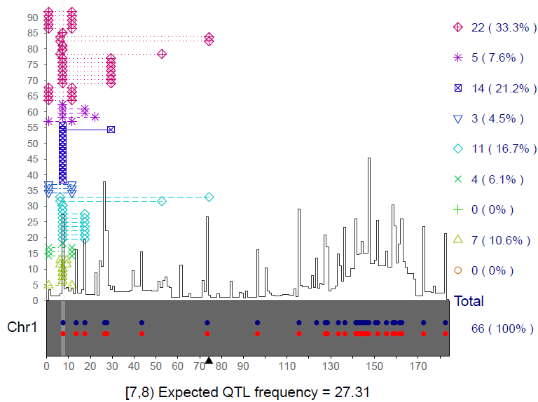
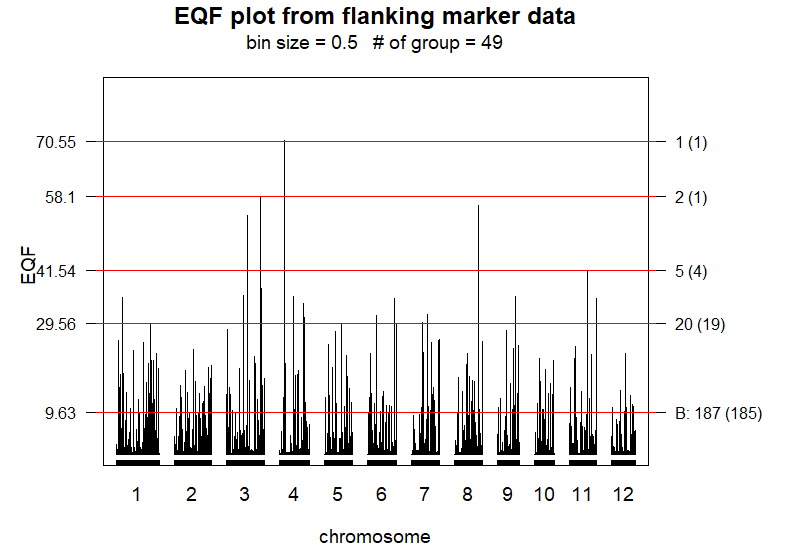

This paper introduces an R package QTLEMM that implements commonly used and popular statistical methods for QTL mapping and QTL hotspot detection. For QTL mapping, QTLEMM offers a suite of functions for simulating data, computing significance thresholds, and estimating QTL parameters using single-QTL or multiple-QTL methods in diverse experimental populations. These methods encompass linear regression, permutation tests, Gaussian stochastic process, normal mixture models, and truncated normal mixture models. Moreover, QTLEMM accommodates both complete genotyping and selective genotyping data, and enables the fitting and comparison of different models in the analysis. For QTL hotspot detection, QTLEMM devises the statistical framework that can handle both the data from genetical genomics experiments and summarized data, mitigate the underestimation of hotspot thresholds, and also identify various types of hotspots at a very low computational cost. QTLEMM provides numerical and graphical results, and can facilitate the discovery of more significant results in the analysis of quantitative traits in biological studies.
Many biologically and economically important traits in organisms are quantitative rather than qualitative. These include traditional traits (such as yields and quality in rice, weight and body fat percentage in animals, and diabetes and hypertension in humans) and molecular traits (such as gene expression and protein levels). Quantitative traits typically exhibit continuous variation in a population, so there is no easy way to categorize them. They are likely to be affected by numerous genes each with modest effects and easily affected by environmental factors (Falconer and Mackay 1996). Consequently, traditional methods such as the Mendelian segregation ratio analysis, mean and variance analyses, covariance studies, and the examination of familial correlations are very difficult for detecting the individual genes contributing to these traits. The genes responsible for quantitative traits are referred to as quantitative trait loci (QTL). For a long time, researchers have tried to obtain individual QTL information for exploring the genetic mechanisms underlying quantitative traits and further to manipulate them for improving the traits. With the availability of fine-scale genetic marker data along the genomes for various organisms, it has become possible to systematically map for and detect individual QTL (QTL mapping) by using more sophisticated statistical methods. Understanding the genetic mechanisms of quantitative traits using QTL mapping remains a major challenge and considerable issue in broad areas of biological studies (Chen et al. 2021; Kumar et al. 2024; Meng et al. 2024; Mackay and Anholt 2024).
Statistical methods for QTL mapping have been well established (Lander and Botstein 1989; Haley and Knott 1992; Zeng 1993, 1994; Jansen 1993; Xu and Atchley 1995; Kao et al. 1999; Kao 2000, 2004, 2006; Sen and Churchill 2001; Broman et al. 2003; Kao and Zeng 2002; Verbyla et al. 2007; Li et al. 2008; Kao and Zeng 2009, 2010; Kao and Ho 2012; Lee et al. 2014; Wang et al. 2016). These methods analyze the marker and trait data from well-designed experimental populations to estimate the QTL parameters, including the numbers, positions, various gene effects (additive, dominance, and interactive), variance components, heritabilities, etc. The experimental populations include the most commonly used populations, such as the backcross and \(F_2\) populations, and other more advanced populations, such as recombinant inbred (RI) populations, advanced intercross (AI) populations, intermated recombinant inbred (IRI) populations, and immortalized \(F_2\) populations (Kao and Zeng 2009). The statistical methods are applied to analyze the QTL mapping data and tackle several central issues, including the estimation of QTL parameters, determination of threshold values and selective genotyping, in the QTL mapping studies. These studies have provided important insights into the genetic mechanisms governing quantitative traits in various organisms, such as rice, maize, alfalfa, Atlantic salmon, trout, etc. (Vaughan et al. 2007; Chen et al. 2021; Kumar et al. 2024; Meng et al. 2024; Mackay and Anholt 2024).
QTL hotspots, characterized by genomic locations enriched in QTL, represent a common and notable feature when collecting numerous QTL for various traits in various biological studies (Chardon et al. 2004; West et al. 2007; Breitling et al. 2008; Wu et al. 2008; Yang et al. 2019; Meng et al. 2024). These hotspots are significant and appealing due to their high informativeness and potential harboring for genes related to quantitative traits. Presently, both the data containing original marker genotypes and numerous molecular traits for each individual (referred to as individual-level data hereafter) from genetical genomics experiments and the summarized QTL data from public QTL databases can provide the data sets with numerous QTL for hotspot analysis. Statistical methods using either type of data for detecting QTL hotspots have been proposed, and they are mainly based on the permutation test approach (Wu et al. 2008; Li et al. 2010; Breitling et al. 2008; Neto et al. 2012; Yang et al. 2019; Wu et al. 2021). Among these methods, the statistical framework outlined by Yang et al. (2019) and Wu et al. (2021) has the notable features of being able to handle both types of data, addresses several challenges and saves computational cost in the process of QTL hotspot detection.
Statistical QTL mapping software packages such as MapMaker/QTL (Lincoln et al. 1993), WinQTLCart (Wang 2000), R/qtl (Broman et al. 2003), QTLNetwork (Yang et al. 2008; Taylor and Verbyla 2011; Verbyla et al. 2012), QTL.gCIMapping.GUI (Zhang et al. 2020) have been developed and documented in the literature. Among them, while most packages consider fixed effect models, the R/wgaim package developed in the R system offers linear mixed effects and random effects models, respectively, for QTL mapping in the backcross, DH and RIL populations. It has the feature of being able to simultaneously incorporate the whole genome into the model, and hence is relatively simple in selecting and detecting QTL during the analysis (Taylor and Verbyla 2011). Notably, R/qtl is a free and powerful R package that provides a broad range of methods, which include single-marker analysis, interval mapping (Lander and Botstein 1989), regression interval mapping (Haley and Knott 1992), multiple QTL mapping (Jansen 1993), composite interval mapping (Zeng 1994) for a wide variety of experimental populations for QTL mapping. Permutation test (Churchill and Doerge 1994) is used to determine significance thresholds for QTL mapping in R/qtl. Here, we introduce an R package QTLEMM (QTL EM algorithm mapping) that implements commonly used and popular statistical methods for both QTL mapping and QTL hotspot detection. For QTL mapping analysis, in addition to providing most of the methods in R/qtl, QTLEMM also offers multiple interval mapping (Kao et al. 1999) to fit multiple QTL directly in the model for a wide range of experimental populations. Furthermore, QTLEMM can perform novel tasks that the existing R packages lack such as simulating and handling the complete or selective genotyping data, computing the significance threshold values based on Gaussian stochastic process, and providing the asymptotic variance-covariance matrix for the QTL estimates (Kao and Zeng 1997; Kao and Ho 2012; Lee et al. 2014). QTLEMM also distinguishes itself by uniquely offering the statistical framework of Yang et al. (2019) and Wu et al. (2021) using either the individual-level data or summarized data to proceed with the QTL hotspot detection analysis. We provide a comprehensive overview of the primary R functions in the QTLEMM package. Results from analyses are presented through numerical and graphical outputs, facilitating interpretation and visualization of findings. The QTLEMM package provides researchers with statistical tools to find more significant results in exploring the network among expression of genes, QTL hotspots, and quantitative traits in genes, genomes, and genetics studies.
Identifying individual QTL (QTL mapping) is a crucial endeavor aimed at understanding the genetic basis and architecture of quantitative traits, thereby facilitating trait manipulation and improvement. Since the specific locations of QTLs are unknown prior to mapping and they could potentially be located anywhere along the genome, the primary objectives of statistical methods are centered around searching for individual QTLs and subsequently fitting them all into statistical model for the estimation of QTL parameters.
Lander and Botstein (1989) were the first to propose a QTL mapping procedure known as interval mapping, which systematically searches the entire genome for QTLs. The interval mapping approach utilizes one marker interval (one flanking marker pair) at a time to establish a putative QTL at a specific position. It models the relationship between a quantitative trait and the putative QTL at that position, subsequently testing for the presence of the QTL. For a putative QTL, denoted as Q, at a specific fixed position x along the genome, the statistical model for individual \(i\) with a phenotypic trait value \(y_{i}\) can be expressed as follows:
\[\begin{equation} y_{i} = G_{i} + \varepsilon_{i} \label{eq:e1} \end{equation} \tag{1}\]
where \(G_{i}\) represents the genotypic value of individual \(i\), and \(\varepsilon_{i}\) is a residual assumed to follow a normal distribution with mean \(0\) and variance \(\sigma ^{2}\). For the individuals in a population derived from two inbred lines, such as the \(F_2\) population, the genotypes of their Q can be one of the three possible genotypes, \(P_{1}\) homozygote (\(QQ\)), heterozygote (\(Qq\)) or \(P_{2}\) homozygote (\(qq\)). Several different genetic models have been proposed to characterize the relationship between genotypic values and gene effects (Cockerham 1954; Van Der Veen 1959; Weir and Cockerham 1977; Kao and Zeng 2002). According to Cockerham’s model (Kao and Zeng 2002), the relationship between the three genotypic values and the QTL effects can be modeled as \(G_{QQ}=\mu+a-d/2\), \(G_{Qq}=\mu+d/2\) and \(G_{qq}=\mu-a-d/2\), respectively, where \(\mu\) is the mean genotypic value, \(a\) and \(d\) represent the additive and dominance effects of the QTL, respectively. We then can construct an equivalent model of equation (1) for individual \(i\) as follows:
\[\begin{equation} y_{i}=\mu+ax_{i}+dz_{i}+\varepsilon_{i} \label{eq:e2} \end{equation} \tag{2}\]
where \(\left(x_{i},z_{i}\right)=\left(1,-1/2\right)\), \(\left(0,1/2\right)\) or \(\left(-1,-1/2\right)\) if the QTL genotype of individual \(i\) is \(QQ\), \(Qq\) or \(qq\). Equation (2) builds the relationship between the genotypic values and QTL genotypes. If the putative QTL is located at the marker, the model is a regression model. However, if the putative QTL is positioned at \(x\) within the marker interval (M,N), the genotypes of the QTL are not directly observable and must be inferred from its flanking markers M and N. In this scenario, the statistical model typically becomes a normal mixture model and is called interval mapping (IM) model. Given data with \(n\) individuals, the likelihood function of the IM model for \(\theta=\left(\mu,a,d,\sigma^{2}\right)\) can be expressed as follows:
\[\begin{equation} L\left(\theta|Y,X\right)=\prod_{i=1}^{n}\left[\sum_{j=1}^{3}p_{ij}\times f\left(y_{i}|\mu_{j},\sigma^{2}\right)\right] \label{eq:e3} \end{equation} \tag{3}\]
where \(f\left(y_{i}|\mu_{j},\sigma^{2}\right)\) represents a normal probability density function with mean \(\mu_{j}\) and variance \(\sigma^{2}\). The \(\mu_{j}\)’s correspond to the genotypic values of the three different QTL genotypes (\(\mu_{1}=G_{QQ}\),\(\mu_{2}=G_{Qq}\),\(\mu_{3}=G_{qq}\)), while \(p_{ij}\)’s denote the mixing proportions (conditional probabilities) of the three QTL genotypes inferred from the two flanking markers (refer to Kao and Zeng 2009, for obtaining \(p_{ij}\)’s in various experimental populations). By treating the normal mixture model as an incomplete-data problem, the EM algorithm (Dempster et al. 1977) can be readily implemented to obtain the maximum likelihood estimates (MLE) of the parameters. Subsequently, a likelihood ratio test (LRT) can be performed to test the null hypothesis of no QTL (\(H_{0}\) : \(a=0\) and \(d=0\)) at the position x. With a fine-scale genetic marker map throughout the genome, the IM model can be conducted at all positions covered by markers to produce a continuous LRT statistic profile along chromosomes. By setting a predetermined LRT threshold, the position with the significantly largest LRT statistic in a chromosome region is considered the estimated QTL location. This method enables the systematic search and identification of QTLs at the genome-wide level, thereby facilitating the estimation of QTL parameters. However, since the search process for QTL needs to be performed at every position of the genome, the iterative expectation-maximization (EM) algorithm can become computationally expensive for QTL mapping (Haley and Knott 1992; Kao 2000). Haley and Knott (1992) introduced regression interval mapping (REG IM) as an approximation to the IM model, aimed at reducing computational costs. In REG IM, the quantitative trait value is regressed on the conditional expected genotypic value, providing a computationally efficient alternative to IM (Haley and Knott 1992), although the approximation may not be satisfactory in all cases (Kao 2000; Sen and Churchill 2001).
The approach of IM model focuses on one putative QTL at a time within the model. However, it may introduce bias in the identification and estimation of QTLs when multiple QTLs are present in the same linkage group (Lander and Botstein 1989; Haley and Knott 1992; Zeng 1994). To address this issue, composite interval mapping (CIM, Zeng 1994) and multiple QTL mapping (MQM) model (Jansen 1993), which combines interval mapping with multiple regression analysis, was proposed. During the test for a putative QTL, they both involve using other markers as covariates to mitigate the interference of other QTLs and reduce residual variance, thereby improving the accuracy of the test. The QTLEMM package provides the IM, REG IM, CIM and MQM models for the interval mapping QTL analysis. To further enhance QTL mapping, Kao et al. (1999) introduced the multiple interval mapping (MIM) approach. The MIM approach aims to leverage multiple marker intervals concurrently to incorporate multiple putative QTLs into the model for QTL mapping. For instance, considering \(m\) putative QTLs, Q\(_{1}\), Q\(_{2}\),..., and Q\(_{m}\), located at given positions within \(m\) separate marker intervals, (\(M_{1}\),\(N_{1}\)), ()\(M_{2}\),\(N_{2}\)),..., and (\(M_{m}\),\(N_{m}\)), respectively, the statistical model fitted these \(m\) putative QTLs can be expressed as follows:
\[\begin{equation} y_{i}=\mu+\sum_{j=1}^{m}\left(a_{j}x_{ij}+d_{j}z_{ij}\right)+\varepsilon_{i} \label{eq:e4} \end{equation} \tag{4}\]
For \(m\) putative QTLs in the model, there are \(3^{m}\) possible QTL genotypes, and the likelihood of the model for \(\theta=\left(\mu,a_{1},d_{1},a_{2},d_{2},...,a_{m},d_{m},\sigma^{2}\right)\) becomes a mixture of \(3^{m}\) normal
\[\begin{equation} L\left(\theta|Y,X\right)=\prod_{i=1}^{n}\left[\sum_{j=1}^{3^{m}}p_{ij}\times f\left(y_{i}|\mu_{j},\sigma^{2}\right)\right] \label{eq:e5} \end{equation} \tag{5}\]
under the normal assumption, where \(p_{ij}\)’s are the conditional probabilities of the \(3^{m}\) possible QTL genotypes given the flanking marker genotypes. The statistical model (equation (4)) with normal mixture likelihood (equation (5)) is called MIM model. The general formulas by Kao and Zeng (1997), formulated based on the EM algorithm, can be used to estimate the parameters of the MIM model. To avoid using the iterative EM algorithm, alternative approximate methods considering multiple QTLs in the model include REG IM (Haley and Knott 1992) and multiple imputation by Sen and Churchill (2001). While the two approximate methods offer faster computational speeds, their differences compared to the MIM model in the QTL analysis can be significant in certain situations, as discussed by Kao (2000) and Sen and Churchill (2001), and demonstrated through empirical examples (not shown). The R/qtl package provides these two approximate methods for QTL mapping. Subsequently, Kao (2004), Kao (2006) and Kao and Zeng (2009) extended the MIM model to a wide range of advanced populations for QTL mapping, considering specific genome structures present in advanced populations. In addition, Lee et al. (2014) further developed the MIM model for the selective genotyping design, a topic we discuss below. The MIM approach indeed offers enhanced precision and power in QTL mapping. Also, it enables the analysis and estimation of epistasis between QTL, more accurate prediction of genotypic values of individuals, and estimation of heritabilities of quantitative traits. The QTLEMM package provides the MIM model and the REG IM method (considering multiple QTLs) to deal with the situations of multiple QTLs in the QTL mapping analysis.
In the interval mapping procedure, a series of null hypotheses, both correlated and uncorrelated, are tested using LRT statistics across all genomic positions. Given the multiplicity of tests, controlling genome-wide error rates is crucial when determining threshold values for claiming significant QTL detection. It has been recognized that various factors, such as the number and size of intervals, population genome structures, and marker density, are involved and should be considered in determining the threshold value of QTL detection. To address this challenge, several analytical, empirical, and numerical approaches have been proposed to obtain the threshold values. These include methods like Bonferroni adjustment, Ornstein-Uhlenbeck process, numerical simulation, permutation test, and Gaussian process. Each offers unique insights and advantages in obtaining threshold values tailored to the specific characteristics of the QTL mapping study (Lander and Botstein 1989; Churchill and Doerge 1994; Rebai et al. 1994; Piepho 2001; Zou 2004; Chang et al. 2009; Guo 2011; Kao and Ho 2012). It has been known that numerical methods like permutation tests or numerical simulations are computationally intensive, and analytical methods like Gaussian processes offer a more efficient alternative with lower computational costs. The Gaussian process approaches by Chang et al. (2009), Guo (2011) and Kao and Ho (2012) can stand out as particularly efficient, as it is much faster than the permutation test in obtaining thresholds. This significant feature in computational speed makes the Gaussian process method a highly practical and attractive option as far as the computational efficiency is concerned in determining the threshold values for QTL detection.
Chang et al. (2009) showed that the asymptotic distribution of the score test statistics, denoted as \(u(x_{i})\) for \(i=1,2,...,k\), at all the \(k\) sequential positions in the genome, follows a Gaussian stochastic process. Furthermore, as the squared score statistic \(u^{2}(x)\) is asymptotically equivalent to the LRT statistic (Cox and Hinkley 1979; Chang et al. 2009), the distribution of the supremum of \(u^{2}(x)\) along the genome under the null hypothesis can be used to assess the threshold value of the LRT statistic in QTL mapping. Based upon this concept, Guo (2011) and Kao and Ho (2012) extended Chang et al. (2009)’s methodology by deriving more general score test statistics and Gaussian processes tailored for evaluating threshold values in the backcross, \(F_2\), RI \(F_t\) and AI \(F_t\) populations. These advancements provide researchers with statistical tools to determine the significance thresholds for QTL mapping analyses in diverse experimental populations. In the scenario of the \(F_2\) population, each of the \(k\) positions is linked with two score test statistics: one for the additive effect and the other for the dominance effect. Let \(U\) represent a vector whose components are the score test statistics at the \(k\) genomic positions. Therefore, the vector \(U\) has length of \(2k\). The asymptotic distribution of \(U\) follows a Gaussian stochastic process, denoted as \(U\sim N(\boldsymbol{\mu},\Sigma)\), which is a multivariate normal distribution. The variance-covariance matrix \(\Sigma\) captures the variability and correlations among the score test statistics across different genomic positions. If the QTL are located at markers, the genotypic distributions of one and two genes are needed to compute their variances and covariances. If the QTL are located in the marker intervals, the genotypic distributions of two, three and four genes are required to obtain their variances and covariances (see Kao and Ho (2012) for details). The transition equations proposed by Haldane and Waddington (1931), Geiringer (1944), and Kao and Zeng (2010) provide valuable tools for deriving genotypic frequencies of two, three, and four genes, facilitating the construction of the variance-covariance matrix. These equations offer insights into the genotypic distribution of a wide variety of experimental populations, enabling a deeper understanding of variance-covariance structures between genes. The general frameworks of the score test statistics and Gaussian processes introduced by Guo (2011) and Kao and Ho (2012) can be used to obtain the threshold values of QTL mapping for genomes with different sizes and marker densities in the backcross, \(F_2\), RI \(F_t\) and AI \(F_t\) populations.
The permutation test has been an appealing approach to obtain the thresholds because it is robust to departures from distributional assumptions and can reflect the peculiarity of the data at hand. To justify the Gaussian process approaches, we perform the permutation tests using R/qtl to compute the thresholds at \(\alpha=0.05\) level for different numbers of equally spaced markers on a 100-cM chromosome in the backcross, \(F_2\) and RIL populations. These thresholds are then compared with those obtained from the same set-up by using the numerical simulations and Gaussian processes in Guo (2011) and Kao and Ho (2012). The three sets of threshold values are tabulated and compared in Table 1. In general, it shows that the threshold values obtained by the three approaches are similar to each other in each population, although the thresholds from the permutation tests tend to be slightly larger as compared to those from the other two approaches in the RIL population. Also, the thresholds are higher in denser marker maps as expected. Besides, we also apply the permutation test and Gaussian process to obtain the thresholds for the two simulated and real examples (Sections 3.2.2 and 3.3.2), showing that the two sets of threshold values are also close to each other. The different approaches yield similar thresholds mainly because the normality assumption is met for the data. The above investigations justify the Gaussian process in the computation of the threshold values. Moreover, we found that the Gaussian process is approximately 16,800 times faster than the permutation test (without parallel computing) in obtaining thresholds. The computation cost of Gaussian process is much cheaper than the permutation test and numerical simulation. The R/qtl uses parallel computing techniques to perform the permutation tests so as to be significantly quicker in obtaining the thresholds. Even so, note that the issue of computational cost still remains in the permutation tests. Importantly, the Gaussian process methods have very low computational costs, making them practical for large-scale analyses. In practice, when given a specific significance level and genome size, threshold values should be adjusted to account for denser marker maps and more advanced populations. This adjustment ensures that the statistical analysis appropriately controls for multiple testing and accounts for the complexities inherent in different genetic backgrounds and experimental designs. The QTLEMM package implements the Gaussian processes derived by Guo (2011) and Kao and Ho (2012) for computing significant thresholds of QTL mapping.
| No. of markers | |||||||
| Threshold | 2 | 3 | 6 | 11 | 21 | 51 | 101 |
| Backcross population | |||||||
| Simulation | 5.54 | 6.13 | 6.48 | 7.45 | 7.80 | 8.21 | 8.28 |
| Gaussian p. | 5.48 | 6.79 | 7.27 | 7.64 | 7.96 | 8.23 | 8.36 |
| Permutation | 5.12 | 5.56 | 6.75 | 7.26 | 7.75 | 8.43 | 8.91 |
| \(F_2\) population | |||||||
| Simulation | 8.13 | 8.98 | 10.00 | 10.48 | 11.20 | 11.75 | 12.32 |
| Gaussian p. | 8.10 | 8.97 | 9.85 | 10.97 | 11.15 | 11.73 | 11.96 |
| Permutation | 7.36 | 8.10 | 9.72 | 10.26 | 11.01 | 11.61 | 12.68 |
| RIL population | |||||||
| Simulation | 5.74 | 6.41 | 7.31 | 7.87 | 8.64 | 9.21 | 9.53 |
| Gaussian p. | 5.56 | 6.30 | 6.96 | 7.93 | 8.56 | 9.10 | 9.32 |
| Permutation | 6.34 | 6.97 | 7.50 | 8.14 | 8.95 | 9.80 | 10.54 |
Markers are evenly placed on a 100-cM Chromosome. The \(F_2\) population considers both additive and dominance effects. R/qtl is used to perform the permutations tests.
based on 10,000 simulated data sets each containing 200 individuals from the null distribution.
based on 10,000 simulations (Guo 2011).
based on 10,000 simulations (Kao and Ho 2012).
based on 1000 permutations of one simulated data set containing 200 individuals.
The cost of conducting QTL mapping experiments includes both phenotyping and genotyping expenses. In situations where budget constraints are not a primary concern, researchers usually choose complete genotyping, wherein all individuals in the sample undergo both genotyping and phenotyping procedures. However, despite recent reductions in genotyping costs, researchers frequently encounter insufficient budgets that prevent them from fully covering the expenses of complete genotyping. In situations where budgets are insufficient, researchers may explore alternative cost-saving approaches. Selective genotyping has been known as a cost-saving strategy to reduce genotyping work and can still maintain nearly equivalent efficiency to complete genotyping in QTL mapping (Lebowitz et al. 1987; Lander and Botstein 1989; Xu and Vogl 2000; Lee et al. 2014). This method involves selecting individuals from the high and low extremes of the trait distribution for genotyping, while leaving the remaining individuals ungenotyped within the entire sample. By focusing genotyping on individuals with extreme trait values, researchers can still capture most of the genetic variation in the sample to maintain efficiency. Overall, selective genotyping allows researchers to balance between budget constraints and mapping efficiency in QTL detection analysis.
Suppose that the sample consists of \(n\) individuals, out of which \(n_{s}\) individuals with extreme trait values (\(n_{s}⁄2\) each from the upper and lower extremes) are selected for marker genotyping. The remaining \(n_{u}=n-n_{s}\) individuals are not genotyped. Statistical QTL mapping methods for analyzing selective genotyping data can either consider all the \(n\) individuals (full data) or consider just the \(n_{s}\) genotyped individuals (genotyping data) in their models for QTL detection. If only the genotyping data are utilized in the analysis, data of this sort are called centrally truncated data. Xu and Vogl (2000) and Lee et al. (2014) introduced the truncated model within the mixture framework of interval mapping procedure, presenting a truncated normal mixture model for QTL analysis. For \(n_{s}\) genotyped individuals, the likelihood function for \(\theta\) in the \(m\) QTL model can be expressed as follows:
\[\begin{equation} L\left(\theta|Y,X\right)=\prod_{i=1}^{n_{s}}\left[\sum_{j=1}^{3^{m}}p_{ij}\times\frac{f\left(y_{si}|\mu_{j},\sigma^{2}\right)}{U_{j}}\right] \label{eq:e7} \end{equation} \tag{6}\]
where \(y_{si}\) is the trait value of the \(i\)th genotyped individual, and
\[\begin{equation} U_{j}=\int_{-\infty }^{T_{L}}f\left(y_{si}|\mu_{j},\sigma^{2}\right)dy_{si}+\int_{T_{R}}^{\infty}f\left(y_{si}|\mu_{j},\sigma^{2}\right)dy_{si} \label{eq:e8} \end{equation} \tag{7}\]
is the cumulative density with trait values greater than \(T_{R}\) (right truncated point) and lower than \(T_{L}\) (left truncated point), such that \(P\left(y_{si}>T_{R}\right)=P\left(y_{si}<T_{L}\right)=n_s⁄2n\). Further details on the EM algorithm for obtaining the MLE of the parameters in the truncated normal mixture model are provided in Lee et al. (2014). If the full data are fitted into the statistical model for QTL analysis, the model likelihood can be expressed as follows:
\[\begin{equation} L\left(\theta|Y,X\right)=\prod_{i=1}^{n_{s}}\left[\sum_{j=1}^{3^{m}}p_{ij}\times f\left(y_{si}|\mu_{j},\sigma^{2}\right)\right]\times\prod_{i=1}^{n_{u}}\left[\sum_{j=1}^{3^{m}}q_{j}\times f\left(y_{ui}|\mu_{j},\sigma^{2}\right)\right] \label{eq:e9} \end{equation} \tag{8}\]
where the first term represents the likelihood for the \(n_{s}\) genotyped individuals, while the second term accounts for the \(n_{u}\) ungenotyped individuals, and \(y_{ui}\) is the trait value of \(i\)th ungenotyped individual.
In equation (8), note that \(p_{ij}\)’s are derived from the conditional probabilities of the QTL genotypes given their flanking marker genotypes, and \(q_{j}\)’s represent the proportions of QTL genotypes in the ungenotyped individuals (Lee et al. 2014). In the parameter estimation, the same EM algorithm employed for complete genotyping (Kao and Zeng 1997) can be directly applied to obtain the MLE. Studies have indicated that the analysis utilizing full data by the model in equation (8) outperforms that utilizing only genotyping data by the model in equation (6) because additional information from the ungenotyped individuals is incorporated into the analysis (Xu and Vogl 2000; Lee et al. 2014). Additionally, selective genotyping using larger genotyping proportions, such as \(n_{s}⁄n=0.5\), may maintain roughly equivalent power to complete genotyping, whereas using smaller genotyping proportions presents difficulties in achieving the same level of power (Lee et al. 2014). These current selective genotyping methods mainly focus on the backcross and \(F_2\) populations. Herein, we have substantially extended and modified the MIM models in equations (6) and (8) for selective genotyping in other advanced populations by considering their specific population genome structures. The QTLEMM package provides the MIM models to deal with the selective genotyping data (full or genotyping data) from the \(F_2\) population and the more advanced populations.
Genome-wide QTL hotspot detection typically requires datasets containing numerous QTL to proceed with the analysis. Currently, genetical genomics experiments and public QTL databases serve as two feasible sources of such data. These two data sources have different structures. Genetical genomics experiments provide individual-level data, enabling the detection of thousands of QTLs in a single experiment. On the other hand, public databases such as GRAMENE, Q-TARO, Rice TOGO browser, PeanutBase, and MaizeGDB curate thousands of summarized QTL data. These databases curate the information from numerous independent QTL experiments across various traditional traits, and contain detected QTL, trait names, and reference sources but lack individual-level data. Utilizing both individual-level data from genetical genomics experiments or summarized QTL data from public databases, several statistical methods, primarily based on permutation tests, have been proposed to detect QTL hotspots. West et al. (2007), Wu et al. (2008), Li et al. (2010), Breitling et al. (2008) and Neto et al. (2012) have developed statistical methods to detect QTL hotspots for genetical genomics experiments. These methods for detecting QTL hotspots may suffer from several problems, including ignoring the correlation structure among traits, neglecting the magnitude of LOD scores of the QTLs, or incurring a very high computational cost. These problems often lead to the detection of excessive spurious hotspots, failure to discover biologically interesting hotspots composed of a small to moderate number of QTLs with strong LOD scores, and computational intractability, respectively, during the detection process. Solving these problems is crucial for improving the accuracy and efficiency of QTL hotspot detection.
The statistical framework developed by Yang et al. (2019) and Wu et al. (2021) can accommodate both individual-level data and summarized data, and it can also address the aforementioned problems at a time in QTL hotspot detection. The statistical framework first summarizes the QTL for all traits using an EQF (expected QTL frequency) matrix. The EQF matrix has column dimension equivalent to the genome size and row dimension corresponding to the number of traits. As the statistical framework directly operates on the EQF matrix, it has a very cheap computational cost. Then it lets \(\gamma_{t,\alpha}\) represent the EQF threshold for assessing at least \(t\) spurious hotspots at level \(\alpha\) in the EQF matrix. Two special devices, trait grouping and top \(\gamma_{t,\alpha}\) threshold, are deployed to handle the remaining problems. The trait grouping groups the tightly linked and/or pleiotropic traits together to account for the correlation structure among traits, and then can be used as an option to obtain much stricter EQF thresholds and to dismiss spurious QTL hotspots. The top \(\gamma_{t,\alpha}\) threshold is defined as the highest EQF threshold (with the smallest \(t\)) necessary for a genomic position to be significant as a QTL hotspot in the EQF matrix, and can be used to outline the LOD-score pattern of QTL in a hotspot across the different EQF matrices. The pattern of the top \(\gamma_{t,\alpha}\) thresholds of a QTL hotspot across the different EQF matrices can profile its relative significance status as compared to other hotspots, so as to have the ability to identify the small and moderate hotspots with strong LOD scores in detecting QTL hotspots. The statistical framework of Yang et al. (2019) and Wu et al. (2021) has a very low computational cost and hence is particularly suitable for obtaining the QTL hotspot architectures for all the transcriptions within a reasonable time and cost frame in the genetical genomics experiments as compared to the approaches by permuting the individual-level data. Please refer to Yang et al. (2019) and Wu et al. (2021) for further details on the statistical framework. The QTLEMM package provides their proposed statistical framework for QTL hotspot detection.
The functions for the QTL mapping analysis in the
QTLEMM package are
capable of handling the data from backcross, \(F_2\), AI, RI, IRI and
immortalized \(F_2\) populations. For each population, the package
considers both complete genotyping data and selective genotyping data
for the QTL mapping analysis. The functions within the package enable
the utilization of several methods including linear regression, IM, REG
IM, CIM and MQM and MIM models for QTL mapping analysis, and they are
outlined in Table 2. The
progeny() function generates simulated trait and genotype data for
diverse experimental populations. These data are then input into the
IM.search() function to search the genome for potential QTLs.
Additionally, the MIM.search() function can search for an additional
QTL given other identified QTLs. The best position can be further
obtained by using the MIM.points() function. Subsequently, the
D.make() and Q.make() functions are employed to create the genetic
design matrix of the QTL effects and the conditional probability matrix
of the QTL genotypes, respectively. These two matrices are then utilized
in the EM.MIM() function to estimate the parameters in the MIM model.
Figure 1 is the flow chart
of using the above functions for the QTL mapping analysis. Below, we
demonstrate the application of these QTL mapping functions using both
simulated and real examples.
The QTL mapping data typically consist of two components: phenotypic
trait values and marker genotypes observed in the individuals under
study. To initiate QTL mapping analysis using the
QTLEMM package, four
essential arguments are required: markers (marker), genotypes
(geno), phenotypes (y) and QTL (QTL). The marker argument is a
\(k\times2\) matrix containing marker information, where \(k\) is the number
of markers. In the marker argument, the first column labels the
chromosomes where the markers are located, while the second column
indicates the marker positions in Morgan (M) or centimorgan (cM).
Table 3 provides an
example of the marker argument, displaying that the first three
markers of the first chromosome are positioned at 0, 24, and 40 cM,
respectively. The QTL argument is a \(q\times2\) matrix containing QTL
information, where \(q\) is the number of QTLs. Its format is the same as
that of the marker argument. The geno argument is an \(n\times k\)
matrix containing the marker genotypes of \(n\) individuals. Genotypes for
\(P_{1}\) homozygote (\(MM\)), heterozygote (\(Mm\)) and \(P_{2}\) homozygote
(\(mm\)) are encoded as 2, 1 and 0, respectively, while missing genotypes
are coded as NA. Table 4’ provides an example of the geno matrix, where each
row represents the genotypes of the \(k\) markers of an individual. The
y argument is an \(n\times1\) vector containing the trait values of \(n\)
individuals.
| Function | Description |
|---|---|
| Major function | |
EM.MIM() |
MIM to estimate the parameters. |
EM.MIMv() |
MIM to estimate the parameters and their variances. |
IM.search() |
IM to search for the possible QTL. |
MIM.search() |
MIM to search for one additional QTL given the identified QTLs in the model. |
MIM.points() |
MIM to fine tune the QTL parameters by a multidimensional search around the regions of the identified QTL in the model. |
| Minor function | |
progeny() |
Generate the simulated phenotype and genotype data. |
D.make() |
Generate the genetic design matrix. |
Q.make() |
Generate the conditional probability matrix. |
LRTthre() |
The LRT threshold for QTL detection based on Gaussian stochastic process. |

| chromosome | position_cM |
|---|---|
| 1 | 0 |
| 1 | 24 |
| 1 | 40 |
| ... | ... |
| 12 | 72 |
| 2 | 126 |
| \(marker_1\) | \(marker_2\) | \(marker_3\) | \(marker_4\) | \(marker_5\) | ... | \(marker_k\) | |
|---|---|---|---|---|---|---|---|
| \(ind_1\) | 2 | 1 | 1 | 2 | 0 | ... | 2 |
| \(ind_2\) | 2 | 1 | 0 | 0 | 1 | ... | 1 |
| \(ind_3\) | 2 | 2 | NA | 1 | 1 | ... | 0 |
| \(ind_4\) | 0 | 0 | 1 | 0 | NA | ... | 2 |
| ... | ... | ... | ... | ... | ... | ... | ... |
| \(ind_n\) | 1 | 1 | 0 | 0 | 1 | ... | 0 |
Below a simulation example is presented to demonstrate the usage of the QTLEMM package. Initially, it is necessary to install and load the QTLEMM package and set an arbitrary random number seed, such as 8000, for data simulation in the R environment. Below are the codes.
> install.packages("QTLEMM")
> library(QTLEMM)
> set.seed(8000)
> options(digits = 3)The progeny() function can simulate marker genotype and phenotype
(trait) data from experimental populations for QTL mapping analysis.
This function accepts several key arguments: the E.vector argument
represents the effects of the QTL; the ng argument specifies the
generation number; the h2 argument sets the heritability; the size
argument contains the sample size; the type argument is used to
specify the population type, which includes backcross (type="BC"),
advanced intercross population (type="AI"), and recombinant inbred
population (type="RI"). Now consider the scenario that a simulated
dataset consists of 200 \(F_2\) individuals with three chromosomes, each
with eleven 10-cM equally spaced markers. Three QTLs are positioned at
\[1,23\] (the 23 cM of the \(1^{st}\) chromosome), \[1,77\] and \[2,55\],
respectively, and their effects are assumed to be -10, 12, and 8,
respectively. The \(1^{st}\) and \(3^{rd}\) QTLs have an
additive-by-additive effect of 1. The heritability is set at 0.5. Below
are the commands used to generate such a dataset. The command of
defining the QTL effects is as follows:
> eff <- c("a1" = -10, "a2" = 12, "a3" = 8, "a1:a3" = 1)If other effects, such as dominance effect of 3 for the \(2^{nd}\) QTL and
additive-by-dominance effect of 2 for the \(1^{st}\) and \(2^{nd}\) QTLs,
are considered, the arguments in the command is d2=3 and a2:d1=2.
Please refer to the
QTLEMM document in CRAN
for more detailed instructions. The commands for setting the specified
positions of QTLs and markers are as follows:
> marker <- cbind(rep(1:3,each = 11), rep(seq(0, 100, 10), 3))
> QTL <- cbind(c(1, 1, 2), c(23, 77, 55))
IM.search() function. The upper plot shows the profile of
LRT statistics, while the lower plot exhibits the profile of effects.
The red line represents the threshold value of 9.62 obtained by using
Gaussian process.
Then, the progeny() function can use the above commands to generate
the QTL mapping data of 200 \(F_2\) individuals with heritability 0.5.
> testdata <- progeny(QTL, marker, type = "RI", ng = 2, E.vector = eff, h2 = 0.5,
size = 200)
> names(testdata)
[1] "phe" "E.vector" "marker.prog" "QTL.prog" "genetic.value" "VG" "VE"> y <- testdata$phe
> geno <- testdata$marker.progThe progeny() function outputs a dataset into the object named
testdata. This file contains four parts: phenotypes (phe), QTL
effects (E.vector), marker genotypes (marker.prog), and QTL
genotypes (QTL.prog). The markers and trait values of the 200
individuals in the testdata file are further extracted and organized
into the geno matrix and y vector for QTL mapping analysis.
The IM.search() function is designed to implement the IM model for the
QTL mapping analysis. Its arguments include: the type argument
specifies the population type (BC, AI, and RI population); the
ng argument represents the generation number; the speed argument
determines the walking speed of the IM analysis (in cM); the d.eff
argument indicates if the dominant effect will be considered or not (for
AI or RI); the QTLdist argument specifies the minimum distance (in cM)
between the detected QTL; the plot.all and plot.chr arguments
indicate whether plots of the LRT statistic profile will be generated or
not. Below are the codes of using the IM.search() function to perform
the IM analysis on the simulated dataset without considering any
dominance effect.
> IMtest <- IM.search(marker, geno, y, type = "RI", ng = 2, speed = 1, d.eff = FALSE,
QTLdist = 15, plot.all = TRUE, plot.chr = FALSE, console = FALSE)
> names(IMtest)
[1] "effect" "LRT.threshold" "detect.QTL" "model" "inputdata" > IMtest$LRT.threshold
95%
9.62The outputs of the IM.search() function (IMtest) include: estimated
effects at all positions (effect); LRT threshold (LRT.threshold)
obtained using Gaussian process; numerical results of the detected QTLs
(detect.QTL); graphical outputs. The IM.search() function can also
perform the REG IM model for the QTL mapping analysis by setting the
argument method=”REG” (default method=”EM”).
Figure 2 is the graphical
output of the IM.search() function. It illustrates the profiles of the
LRT statistics and effects across the three chromosomes. The LRT profile
shows three significant peaks, indicating three QTLs are detected, on
two of the three chromosomes. For this dataset, the LRT threshold of
considering both additive and dominance effects for assessing the
significance of QTL detection is 12.58 (12.15) by using Gaussian process
(permutation test in
R/qtl). The LRT threshold
value of considering only additive effect is 9.62 (9.82) by using
Gaussian process (using our own permutation program, as
R/qtl does not provide the
option of considering only additive effect in the F2 population). The
numerical results of the detected QTLs can be listed using the following
commands.
> detQTL <- IMtest$detect.QTL
> detQTL
chr cM a1 LRT R2
14 1 14 -7.00 24.1 0.1064
77 1 77 8.03 29.6 0.1324
153 2 53 6.14 17.3 0.0787The IM analysis concludes that the three QTLs are detected at \[1,14\], \[1,77\] and \[2,53\] with effects of -7.00, 8.03 and 6.14, respectively. They contribute approximately 10.64%, 13.24%, and 7.87% of the trait variation, respectively.
The analysis of the IM model can be further improved using the MIM
approach by jointly fitting the three QTL into the model so as to obtain
more precise and accurate estimates of QTL parameters. The EM.MIM()
function is designed to perform the MIM model analysis. Before
conducting the EM.MIM() function, two matrices, the genetic design
matrix (D.matrix) and the conditional probability matrix
(cp.matrix), must be constructed first. The D.make() and Q.make()
functions are utilized to generate the two matrices, respectively. The
commands in the D.make(), Q.make() and EM.MIM() functions for the
MIM model fitting the three QTL at \[1,14\], \[1,77\] and \[2,53\] with
an additive by additive effect (between the QTLs at \[1,14\] and
\[2,53\]) are given below respectively.
> dQTL <- detQTL[,1:2]
> D.matrix <- D.make(nQTL = 3, type = "RI", a = TRUE, d = 0, aa = c(1, 3))The first argument of the D.make() function is the number of QTL in
the MIM model and is nQTL=3 in this case; the second argument
specifies the population type and is type="RI"; the arguments a and
d indicate if additive or dominance effects will be considered and
they are a=TRUE and d=0 since only the additive effects are
considered; the arguments aa, dd, and ad specify the epistatic
effects between QTLs and is aa=c(1, 3) since the additive by additive
effect between the \(1^{st}\) and \(3^{rd}\) QTLs is considered. The
dimension of D.matrix matrix for this three-QTL MIM model is
\(27\times 4\), and the elements of first six rows are shown below.
> dim(D.matrix)
[1] 27 4> head(D.matrix)
a1 a2 a3 a1:a3
222 1 1 1 1
221 1 1 0 0
220 1 1 -1 -1
212 1 0 1 1
211 1 0 0 0
210 1 0 -1 -1The arguments in the Q.make() function for generating the conditional
probability matrix of the three-QTL MIM model in this case are shown
below. The dimension of the cp.matrix matrix for this three-QTL MIM
model is \(200\times 27\).
> cp.matrix <- Q.make(dQTL, marker, geno, type = "RI", ng = 2)$cp.matrix
> dim(cp.matrix)
[1] 200 27Three inputs are required for driving the EM.MIM() function to perform
the MIM analysis: the genetic design matrix (D.matrix); the
conditional probability matrix (cp.matrix); the phenotypic values
(y). The outputs from the EM.MIM() function include a vector
containing the estimated QTL effects (E.vector), the mean (beta),
the residual variance (variance), the posterior probabilities matrix
(PI.matrix), the log likelihood value (log.likelihood), the LRT
statistics (LRT), the coefficient of determination (R2), the
estimated trait values (y.hat), and the iteration time
(iteration.time) as shown below.
> MIMtest <- EM.MIM(D.matrix = D.matrix, cp.matrix = cp.matrix, y = y, console = FALSE)
> names(MIMtest)
[1] "QTL" "E.vector" "beta" "variance" "PI.matrix" "log.likelihood" "LRT" "R2"
[9] "y.hat" "yu.hat" "iteration.number" "model"> MIMtest$E.vector
a1 a2 a3 a1:a3
-9.61 10.29 6.35 1.66> c(MIMtest$log.likelihood, MIMtest$LRT, MIMtest$R2)
[1] -772.192 145.114 0.411The log likelihood of the MIM model fitting the three QTL with epistasis
is approximately -772. The estimated QTL effects are approximately
-9.61, 10.29 and 6.35 (true values being -10, 12, and 8), respectively,
and the estimated epistatic effect is approximately 1.66. The estimated
heritability (R2) is 0.411, while the true heritability is 0.50. The
above MIM-related functions can also perform the REG IM model (multiple
QTL version) by setting the argument method=”REG”. Besides using the
original marker and trait data, note especially that all the MIM-related
functions can utilize the results from the analysis of IM or MIM
functions, such as the IM.search(), MIM.search(), and MIM.points()
functions, as input to conduct the analysis. Also, the marker and trait
data and the detected QTL information in the previous analysis can be
used in the subsequent analysis. Below are the codes of using the
results from the IM analysis (IMtest) to conduct the EM.MIM()
function..
> MIMtest_ <- EM.MIM(D.matrix = D.matrix, IMresult = IMtest, console = FALSE)
> MIMtest_$E.vector
a1 a2 a3 a1:a3
-9.61 10.29 6.35 1.66The EM.MIMv() function can provide the asymptotic variance-covariance
matrix of the QTL estimates. The inputs in the EM.MIMv() function
include: QTL information about the QTL effects and positions (QTL);
marker information (marker); genotypes (geno); genetic design matrix
(D.matrix); conditional probability matrix (cp.matrix); phenotypic
values (y). If the argument cp.matrix is set to NULL, the
conditional probability matrix is constructed from the input QTL
information and marker information. If the estimated QTL positions
coincide with markers, the asymptotic variance-covariance matrix is not
available. Below are the arguments of the EM.MIMv() function using the
marker and trait data to produce the variance-covariance matrix for the
MIM model fitting the three detected QTLs at \[1,14\], \[1,77\], and
\[2,53\].
> MIMv <- EM.MIMv(dQTL, marker, geno, D.matrix, cp.matrix = NULL, y, console = FALSE)
> # MIMv <- EM.MIMv(D.matrix = D.matrix, IMresult = IMtest, console = FALSE)
> names(MIMv)
[1] "E.vector" "beta" "variance" "PI.matrix" "log.likelihood" "LRT" "R2" "y.hat"
[9] "iteration.number" "avc.matrix" "EMvar"The avc.matrix is the asymptotic variance-covariance matrix, and the
EMvar contains the asymptotic variances of the estimates. They are
listed below.
> round(MIMv$avc.matrix, 3)
QTL1 QTL2 QTL3 a1 a2 a3 a1:a3 residual.var mu
QTL1 0.015 0.017 0.013 -0.003 0.000 0.014 0.076 -0.073 -0.003
QTL2 0.017 0.004 -0.006 -0.023 0.021 -0.003 0.041 -0.191 0.002
QTL3 0.013 -0.006 0.065 -0.034 0.035 0.036 0.134 -0.688 0.009
a1 -0.003 -0.023 -0.034 1.417 -0.354 -0.091 0.038 1.775 0.006
a2 0.000 0.021 0.035 -0.354 1.585 -0.039 0.154 -2.462 -0.096
a3 0.014 -0.003 0.036 -0.091 -0.039 1.463 0.257 -1.185 -0.034
a1:a3 0.076 0.041 0.134 0.038 0.154 0.257 3.724 -2.787 -0.096
variance -0.073 -0.191 -0.688 1.775 -2.462 -1.185 -2.787 179.411 0.030
X1 -0.003 0.002 0.009 0.006 -0.096 -0.034 -0.096 0.030 0.650> round(MIMv$EMvar, 3)
QTL1 QTL2 QTL3 a1 a2 a3 a1:a3 residual.var mu
0.015 0.004 0.065 1.417 1.585 1.463 3.724 179.411 0.650The asymptotic variances of the estimated QTL positions and effects are 0.015, 0.004, 0.065, 1.417, 1.585, 1.463 and 3.724, respectively. The asymptotic variances of the estimated mean and residual variance are 0.650 and 179.411, respectively.
The MIM.search() function is devised to fit the detected QTLs into the
model to search the genome for other possible QTL. The arguments in the
MIM.search() function include the detected QTL (denoted by dQTL2 in
this example), marker (for marker information), geno (for
genotypes), y (for phenotypes), type (for population type), ng
(for the generation number), D.matrix (for the genetic design matrix),
speed (for the walking speed in cM), QTLdist (for the minimum
distance between detected QTLs). The outputs of the MIM.search()
function include information about the estimates of all search positions
(effect), the best QTL positions with the largest log likelihood
(QTL.best), and the estimated QTL effects at the best QTL positions
(effect.best). For demonstration purposes, assume that the two
detected QTLs located at \[1,14\] and \[1,77\] are fitted into the MIM
model to search for the next (third) QTL considering the additive by
additive effect (the design matrix will be the same as that in the above
EM.MIM() function). Below are the commands of the MIM.search()
function to conduct the search for the third QTL given the two detected
QTLs:
> dQTL2 <- cbind(c(1, 1), c(14, 77))
> MIMs <- MIM.search(dQTL2, marker, geno, y, type = "RI", ng = 2, D.matrix = D.matrix,
speed = 1, QTLdist = 15, console = FALSE)
> names(MIMs)
[1] "effect" "QTL.best" "effect.best" "model" "inputdata" > MIMs$QTL.best
chromosome position(cM)
QTL 1 1 14
QTL 2 1 77
QTL new 2 54> MIMs$effect.best
a1 a2 a3 a1:a3 LRT log.likelihood R2
-9.619 10.302 6.385 1.806 145.876 -772.129 0.412The third QTL is detected at the position \[2,54\] with an estimated effect of approximately 6.385. The log likelihood of the MIM model is about -772.129. The LRT statistic for testing the significance of the effects jointly is about 145.876.
Another function related to the MIM analysis is the MIM.points()
function, which is used to fine tune the estimation of QTL parameters by
multidimensional search around the detected QTLs. The fine-tuning ranges
around the detected QTLs are defined using the scope argument, while the
other arguments are the same as those in the MIM.search() function.
Below is the command of the MIM.search() function for performing a
three-dimensional search on the 10-cM range on both sides of the three
QTL at \[1,14\], \[1,77\] and \[2,54\] (with additive by additive
effect).
> MIMp <- MIM.points(dQTL, marker, geno, y, type = "RI", ng = 2, D.matrix = D.matrix,
speed = 2, scope = 10, console = FALSE)
> # MIMp <- MIM.points(D.matrix = D.matrix, speed = 2, scope = 10, IMresult = IMtest,
console = FALSE)
> names(MIMp)
[1] "effect" "QTL.best" "effect.best" "model" "inputdata" > MIMp$QTL.best
chromosome position(cM)
[1,] 1 24
[2,] 1 75
[3,] 2 53> MIMp$effect.best
a1 a2 a3 a1:a3 LRT log.likelihood R2
-10.846 11.994 6.503 3.725 181.130 -765.371 0.464The results show that the largest model log likelihood becomes -765.371, and the estimated heritability is 0.464. After fine-tuning, the detected positions are closer to the true positions \[1,23\], \[1,77\] and \[2,55\], compared to the estimated positions \[1,14\], \[1,77\] and \[2,53\] before fine-tuning. With these estimates, other composite genetic parameters such as heritability and variance components of a quantitative trait can be estimated. Additionally, the response to selection can be predicted based on these estimates.
The yeast dataset (Brem et al. 2005) consists of 112 backcross individuals with 5740 traits and 1072 markers. The raw data are reprocessed into a new dataset called ‘yeast.process’, which can be loaded from QTLEMM package using the following command:
> load(system.file("extdata", "yeast.process.RDATA", package = "QTLEMM"))The yeast.process dataset comprises three lists: the list of marker
genotypes (yeast.process$geno) that contains the marker genotypes of
the 112 individuals; the list of trait values (yeast.process$pheno)
that contains the trait values of the 112 individuals; the list of
marker information (yeast.process$marker) that includes the marker map
(distances) of the 1072 markers on the 16 chromosomes.
> geno <- yeast.process$geno
> marker <- yeast.process$marker
> pheno <- yeast.process$phenoFor the demonstration of analyzing selective genotyping data, we selected the \(3590^{th}\) trait from the dataset and intentionally deleted the marker genotypes of the individuals with medium trait values to produce selective genotyping data for QTL mapping analysis. Specifically, one half of the individuals with extreme trait values (comprising one quarter each from the upper and lower extremes) are chosen to keep their marker genotypes and trait values, and the marker genotypes of the remaining individuals are deleted and ignored in the analysis. Below are the codes for generating the selective genotyping dataset.
> y0 <- pheno[, 3590]
> y <- y0[y0>quantile(y0)[4] | y0<quantile(y0)[2]]
> yu <- y0[y0 >= quantile(y0)[2] & y0 <= quantile(y0)[4]]
> geno.s <- geno[y0 > quantile(y0)[4] | y0 < quantile(y0)[2],]
IM.search2() function
to analyze the selective genotyping data of the 3590th trait
(part a), and using the IM.search() function to analyze the
complete genotyping data (part b). The red line indicates the LRT
threshold obtained by using Gaussian process for assessing the
significance of QTL detection.
The vector y contains the trait values of the individuals with marker
genotypes (the upper and lower 25% individuals), and the geno.s
argument consists of their marker genotypes. The vector yu contains
the trait values of individuals without marker genotypes. The
IM.search() function can also perform several selective genotyping QTL
mapping methods, which encompass the Lee et al. (2014) model
(sele.g="f"), the truncated model (sele.g="t"), and the population
frequency-based model (sele.g="p"), to analyze the selective
genotyping dataset (see Lee et al. (2014) (2014) for details). If
sele.g="n", the function is used to analyze the complete genotyping
data.
The followings are the codes of the IM.search() function to analyze
the selective genotyping data of the \(3590^{th}\) trait. The random
number seed 8000 is used to set up the Gaussian process to compute
threshold values for assessing the significance of QTLs.
> library(QTLEMM)
> set.seed(8000)
> IMtest2 <- IM.search(marker, geno.s, y, yu, sele.g = "f", type = "BC", ng = 1,
plot.all = TRUE, plot.chr = FALSE, console = FALSE)
> IMtest2$detect.QTL
chr cM a1 LRT R2
626 3 53 0.893 22.0 0.1128
1579 5 112 0.753 16.0 0.0749
4523 13 22 -0.882 21.7 0.1048
> IMtest2$LRT.threshold
95%
15.4 Figure 3(a) presents the
profiles of the LRT statistics and estimated effects along the genome.
It shows that three QTL are detected at \[3,53\], \[5,112\] and
\[13,22\], respectively. The LRT threshold value is 15.40 (15.36) by the
Gaussian process (permutation test in
R/qtl). For comparison, we
use the IM.search() function to conduct complete genotyping analysis
for the \(3590^{th}\) trait.
> IMcon <- IM.search(marker, geno, y0, type = "BC", ng = 1, LRT.thre = 15.4,
plot.all = TRUE, plot.chr = FALSE, console = FALSE)
> IMcon$detect.QTL
chr cM a1 LRT R2
624 3 53 0.904 29.0 0.210
1580 5 117 0.877 25.0 0.171
4511 13 22 -0.945 33.1 0.231The profiles of the LRT statistics and estimated effects along the genomes are presented in Figure 3(b). It shows that three QTL are detected at \[3,53\], \[5,115\] and \[13,22\], respectively. Both the selective and complete genotyping IM analyses produce similar LRT statistic profiles and estimates of positions and effects. For each detected QTL, the complete genotyping data analysis produces larger LRT statistics and \(R^{2}\)’s as compared to the selective genotyping analysis.
Using the IM.search() function, the estimates of QTL effects and
positions, model likelihoods and model \(R^{2}\) values were obtained
individually. Certainly, we would like to further fit these detected
QTLs simultaneously into a multiple-QTL model (the MIM Model). This
allows the QTLs to be jointly fitted and controlled in the model to
explain more genetic variation of the quantitative traits and obtain
more precise estimates. Below are the commands of the EM.MIM()
function to perform the selective genotyping MIM model analysis that
considers the three detected QTLs and their all possible epistasis.
> D.matrix <- D.make(3, type = "BC", aa = TRUE)
> MIMtest2 <- EM.MIM(D.matrix = D.matrix, IMresult = IMtest2, console = FALSE)
> MIMtest2$E.vector
a1 a2 a3 a1:a2 a1:a3 a2:a3
0.818 0.744 -0.954 -0.641 0.371 -0.423> c(MIMtest2$log.likelihood, MIMtest2$LRT, MIMtest2$R2)
[1] -115.253 79.117 0.512The model \(R^{2}\) and likelihood are 0.512 and -115.41, respectively.
The estimated marginal and epistatic QTL effects are 0.818, 0.744,
-0.954, -0.641, 0.371 and -0.423, respectively. The MIM.points()
function can be further used to perform a multi-dimensional search
around the 5-cM regions of the detected QTL positions (at \[3,53\],
\[5,112\] and \[13,22\]) to fine-tune the QTL estimates (using the
argument of scope=5). Below are the codes of the MIM.points()
function to perform the multi-dimensional search and the fine-tuning
results.
> MIMp <- MIM.points(D.matrix = D.matrix, scope = 5, IMresult = IMtest2, console = FALSE)
> MIMp$QTL.best
chromosome position(cM)
[1,] 3 58
[2,] 5 111
[3,] 13 21> MIMp$effect.best
a1 a2 a3 a1:a2 a1:a3 a2:a3 LRT log.likelihood R2
0.678 0.758 -0.964 -0.866 0.673 -0.499 82.214 -113.705 0.524The model with the largest log likelihood (-113.705) occurs at positions \[3,58\], \[5,111\] and \[13,21\], and the estimated effects are 0.678, 0.758, -0.964, -0.866, 0.673, -0.499, respectively. The model \(R^{2}\) (estimated heritability) improves from 0.512 to 0.524.
The analysis of QTL hotspot detection has been a pivotal step towards unraveling the genetic architectures of quantitative traits in the study of genes, genomes and genetics (Breitling et al. 2008; Fu et al. 2009; Neto et al. 2012; Wang et al. 2014; Yang et al. 2019; Wu et al. 2021). The genetical genomics experiments and public QTL databases are two feasible sources to provide data with many QTLs for the detection of QTL hotspots. The statistical framework of QTL hotspot detection proposed by Yang et al. (2019) and Wu et al. (2021) is capable of accommodating both types of data. The framework addresses various challenges, including handling the correlation structure among traits, identifying different types of hotspots, and ensuring computational efficiency, thereby making it practical for QTL hotspot detection. The QTLEMM package offers the statistical framework by Yang et al. (2019) and Wu et al. (2021) for the detection of QTL hotspots. The functions for detecting QTL hotspots using the framework are summarized in Table 5. Below, we present the analyses of two real examples, the yeast genetic genomics dataset and the GRAMENE rice database, as demonstration of using these functions for detecting QTL hotspots.
There are 5740 molecular traits in the yeast dataset (Brem et al. 2005).
The QTL mapping procedure employed for the \(3590^{th}\) trait using the
IM.search() function can be applied to analyze the remaining 5739
traits, obtaining their LRT statistics at all positions along the
genome. These LRT statistics can then be converted into LOD scores using
the formula \(LOD = LRT / 4.6\). Subsequently, the LOD scores are
organized into a LOD matrix for QTL hotspot detection, following the
methods outlined by Yang et al. (2019) and Wu et al. (2021). The
LOD.QTLdetect() function is constructed to detect QTL hotspots. It
requires two input datasets: the LOD matrix and the bin information on
the chromosomes. The LOD matrix is a \(t\times p\) matrix, where \(t\) and
\(p\) are the numbers of traits and numbers of bins on the chromosomes,
respectively. The LOD matrix contains the LOD scores of all bins for all
traits (refer to Table 6). The bin information is an \(n\times2\) matrix, where \(n\)
is the number of chromosomes, and it contains the information about the
bin number on each chromosome. The first column denotes the chromosomes,
and the second column denotes the numbers of bins on the chromosomes
(refer to Table 7).
| Function | Description |
|---|---|
LOD.QTLdetect() |
Detect QTL by LOD matrix. |
EQF.permu() |
EQF matrix cluster permutation process for QTL hotspot detection. |
EQF.plot() |
Depict the EQF plot by the result of permutation process. |
Qhot() |
This function generates both numerical and graphical summaries of the QTL hotspot detection in the genomes. |
Qhot.EQF() |
Convert the QTL flanking marker data to EQF matrix and carry out the EQF matrix cluster permutation process. |
| \(bin_1\) | \(bin_2\) | \(bin_3\) | \(bin_4\) | \(bin_5\) | ... | \(bin_n\) | |
|---|---|---|---|---|---|---|---|
| \(trait_1\) | 0.047 | 0.116 | 0.209 | 0.313 | 0.342 | ... | 0.358 |
| \(trait_2\) | 0.095 | 0.176 | 0.274 | 0.376 | 0.301 | ... | 0.342 |
| \(trait_3\) | 0.798 | 0.67 | 0.533 | 0.394 | 0.342 | ... | 0.284 |
| \(trait_4\) | 0.363 | 0.321 | 0.272 | 0.219 | 0.192 | ... | 0.149 |
| \(trait_5\) | 0.017 | 0.01 | 0.005 | 0.002 | 0.001 | ... | 0 |
| .. | ... | ... | ... | ... | ... | ... | ... |
| \(trait_t\) | 0.683 | 0.593 | 0.471 | 0.336 | 0.304 | ... | 0.271 |
| chromosome | number_of_bin |
|---|---|
| 1 | 256 |
| 2 | 324 |
| 3 | 160 |
| 4 | 723 |
| ... | ... |
| 5 | 463 |
| 16 | 513 |
The LOD matrix of the yeast data can be downloaded from GitHub using the
commands below. Users can combine the four files (yeast.LOD.1.RDATA,
yeast.LOD.2.RDATA, yeast.LOD.3.RDATA, yeast.LOD.4.RDATA) to obtain
the complete LOD matrix.
> load(url("https://github.com/py-chung/QTLEMM/raw/main/inst/extdata/yeast.LOD.1.RDATA"))
> load(url("https://github.com/py-chung/QTLEMM/raw/main/inst/extdata/yeast.LOD.2.RDATA"))
> load(url("https://github.com/py-chung/QTLEMM/raw/main/inst/extdata/yeast.LOD.3.RDATA"))
> load(url("https://github.com/py-chung/QTLEMM/raw/main/inst/extdata/yeast.LOD.4.RDATA"))
> load(url("https://github.com/py-chung/QTLEMM/raw/main/inst/extdata/yeast.LOD.bin.RDATA"))
> LOD <- rbind(yeast.LOD.1, yeast.LOD.2, yeast.LOD.3, yeast.LOD.4)
> bin <- yeast.LOD.binOnce the LOD matrix is available, the LOD.QTLdetect() function can be
applied to detect QTL hotspots. The function’s arguments include LOD
for the LOD matrix (refer to Table 6), bin for the numbers of bins on each chromosome
(refer to Table 7),
thre for the threshold value (in terms of LOD) of QTL detection, and
QTLdist for specifying the minimum distance (cM) between the detected
QTL. The numerical results of this function will be output to the
LOD.QTLdetect.result file.
> library(QTLEMM)
> set.seed(8000)
> LOD.QTLdetect.result <- LOD.QTLdetect(LOD, bin, thre = 3, QTLdist = 20, console = FALSE)
> names(LOD.QTLdetect.result)
[1] "detect.QTL.number" "QTL.matrix" "EQF.matrix" "linkage.QTL.number"
[5] "LOD.threshold" "bin"The LOD.QTLdetect.result file is a data list comprising several
components: detect.QTL.number contains the number of detected QTL of
each trait; QTL.matrix holds the QTL positions, where elements marked
as 1 represent the QTL positions, elements marked as 0 represent bins
with LOD scores under the LOD threshold, and other positions are
designated as NA; EQF.matrix contains the EQF value of each bin;
linkage.QTL.number indicates the number of linked QTL among all
detected QTLs; LOD.threshold and bin remain the same as those in the
input data. With these information, the EQF.permu() function embedding
the permutation analysis (with trait grouping; Wu et al. 2021) can be
applied to detect QTL hotspots. The arguments in the EQF.permu()
function involve inputting the output data from LOD.QTLdetect(),
specifying the permutation time (npermu), and using the genome-wide
error rate (GWER) of a given level \(\alpha\) to carry out the permutation
analysis. Additionally, the Q=TRUE argument is to perform permutation
analysis without trait grouping.
> EQF.permu.result <- EQF.permu(LOD.QTLdetect.result, npermu = 1000, alpha = 0.05,
Q = TRUE, console = FALSE)
> names(EQF.permu.result)
[1] "EQF.matrix" "bin" "LOD.threshold" "cluster.number" "cluster.id" "cluster.matrix"
[7] "permu.matrix.cluster" "permu.matrix.Q" "EQF.threshold"The output of the EQF.permu() function includes several components.
The EQF.matrix, bin, and LOD.threshold lists represent the EQF
matrix, bin information matrix, and the LOD threshold respectively,
which are the same as those in the input data. The cluster.number
contains the number of QTLs in each trait group. The cluster.id
contains the serial number of traits in each trait group. The
cluster.matrix includes the reduced EQF matrix after trait grouping.
The permu.matrix.cluster contains the result of permutation with trait
grouping, sorted by order. Similarly, the permu.matrix.Q contains the
result of the permutation without trait grouping, also sorted by order.
The EQF.threshold represents the EQF threshold calculated from the
permutation analysis. Moreover, the EQF.plot() function is designed to
plot the figure of the EQF architecture of the genome (see
Figure 4) using the output
of the EQF.permu() function. Below are the codes.
> EQF.plot(EQF.permu.result, plot.all = TRUE, plot.chr = FALSE)The command of plot.all = TRUE is to draw the EQF architecture of the
entire genome (16 chromosomes) in a single figure
(Figure 4). If
plot.chr = TRUE, the EQF architectures of genome is drawn separately
by chromosomes in different figures.
The Qhot() function manages summarized QTL data collected from public
QTL databases to detect QTL hotspots. Below, we demonstrate the use of
the Qhot() function to detect QTL hotspots using the public GRAMENE
rice database. First the QTL data in the GRAMENE rice database can be
loaded from QTLEMM
package using the following command:
> load(system.file("extdata", "gramene.chr.RDATA", package = "QTLEMM"))
> load(system.file("extdata", "gramene.QTL.RDATA", package = "QTLEMM"))
> head(gramene.chr)
CHR Center.cM. Length.cM.
1 1 74.2 184
2 2 55.5 161
3 3 84.3 166
4 4 19.7 133
5 5 51.8 121
6 6 66.8 127
EQF.plot() function with the output
of the EQF.permu() function. The EQF architecture are
constructed by the uniform method with bin size of 0.5 cM.

Qhot() function with
save.pdf=TRUE. The x-axis denotes the 1st chromosome,
the y-axis denotes the EQF values. The black triangle denotes the
position of centromere. The blue (red) dots denote the QTL hotspots
detected by the Yang et
al. (2019) method (the Q method). The 9 different colored symbols
denote the QTLs responsible for the 9 different trait categories (see Yang et al. 2019).
The dotted lines denote the lengths of the marker intervals flanking the
QTLs (QTL intervals). In total, 66 QTLs contribute probabilities to the
EQF value of 27.31 at bin [7,8). The numbers of contributive QTLs of the
9 different trait categories are 22, 5, 14, 3, 11, 4, 0, 7, and 0,
respectively.

Qhot.EQF() function. The EQF architecture are constructed
by the uniform method with bin size of 0.5 cM.
> head(gramene.QTL) # 9 trait categories in the second column
X Trait chr L R
1 1 Biochemical 1 54.1 54.1
2 2 Vigor 1 147.4 147.4
3 3 Vigor 1 147.4 147.4
4 4 Vigor 1 147.4 147.4
5 5 Vigor 1 147.4 158.6
6 6 Vigor 1 54.1 54.1The gramene.chr is a data frame containing the information about the
chromosomes, including their numbers, midpoint positions (in cM), and
lengths. The gramene.QTL is a data frame for the information about
QTLs, including their serial numbers, trait names, the chromosomes on
which they are located, and positions of their flanking markers (in cM).
Then the Qhot() function can utilize the information about chromosomes
and QTLs to detect the QTL hotspots and output the analysis results.
Below are the codes.
> library(QTLEMM)
> Qhot.result <- Qhot(gramene.QTL, gramene.chr, save.pdf = TRUE)
> names(Qhot.result)
[1] "EQF" "P.threshold" "Q.threshold" "nHot"The analysis results include the EQF values at every bin of chromosomes
(EQF), EQF thresholds obtained by the citeauthorYang-2019 method
(P.threshold), EQF thresholds obtained using the Q method
(Q.threshold), and the numbers of detected hotspots in each chromosome
by the citeauthorYang-2019 method and Q method (nHot‘). The
save.pdf=T command is to generate a PDF file that contains the plots
of QTL composition at every bin. Figure 5 shows the plot of QTL composition at bin [7,8) of the
first chromosome. It outlines the EQF architecture of the \(1^{st}\)
chromosome, the QTL intervals, and the composition of QTLs responsible
for different traits in the hotspot at bin [7,8). The Qhot.EQF()
function is designed to draw the EQF architecture of the genome. The
inputs of the Qhot.EQF() function include the information about
chromosomes, QTLs and traits. Below are the codes of the Qhot.EQF()
and EQF.plot() functions to draw the EQF architecture of the rice
genome.
> load(system.file("extdata", "gramene.trait.RDATA", package = "QTLEMM"))
> head(gramene.trait) # 236 traits in the second column
X Trait chr L R
1 1 leaf nitrogen content 1 54.1 54.1
2 2 root dry weight 1 147.4 147.4
3 3 root dry weight 1 147.4 147.4
4 4 tiller number 1 147.4 147.4
5 5 tiller number 1 147.4 158.6
6 6 root number 1 54.1 54.1> set.seed(8000)
> Qhot.EQF.result <- Qhot.EQF(gramene.trait, gramene.chr[,3], bin.size = 0.5,
permu = TRUE, npermu = 1000, alpha = 0.05, Q = TRUE, console = FALSE)
> names(Qhot.EQF.result)
[1] "EQF.matrix" "bin" "bin.size" "EQF.trait" "EQF.detect" "EQF.nondetect"
[7] "cluster.matrix" "permu.matrix.cluster" "permu.matrix.Q" "EQF.threshold"> EQF.plot(Qhot.EQF.result, plot.all = TRUE, plot.chr = FALSE)The EQF.plot() function uses the output of the Qhot.EQF() function
to draw the figure of the EQF architecture (see
Figure 6).
In this paper we introduce the R package called QTLEMM for the analysis of QTL mapping and QTL hotspot detection, and attempt to provide a comprehensive overview of the functions in the package by analyzing the examples of both simulated and real data sets. The package offers several novel features and advantages:
QTLEMM is designed to accommodate a wide range of experimental populations, including backcross, \(F_2\), AI \(F_t\), RI \(F_t\), IRI and immortalized \(F_2\) populations. This versatility enables comprehensive QTL mapping analysis across different genetic backgrounds and breeding designs.
Users can employ single-QTL or multiple-QTL models to estimate QTL parameters. It can accommodate a host of statistical models to be fitted and compared for QTL detection. The thresholds for claiming the QTL detection can be also determined in the backcross, \(F_2\) and more advanced AI \(F_t\) and RI \(F_t\) populations.
QTLEMM is unique in providing the asymptotic variance-covariance matrix for the estimates of QTL parameters.
QTLEMM is unique in being able to handle both complete genotyping and selective genotyping data from diverse experimental populations in QTL mapping analysis.
Results from QTL mapping and hotspot detection analyses are presented through numerical and graphical outputs, facilitating interpretation and visualization of findings.
The process of QTL mapping and hotspot detection usually involves the analysis of a large number of positions along the genomes. At each position, statistical models are applied to the estimation and testing for making decision, causing the process to be often time-consuming and computationally intensive in the analysis. We attempt to reduce the computational cost and speed up the analysis by eliminating unnecessary loops in writing the functions in this package. The QTLEMM package offers mature, effective, and commonly used statistical methods for QTL mapping and hotspot detection in the analysis of genetic architecture of quantitative traits. We envision the QTLEMM package will be valuable for finding more significant results in exploring the networks among genes, QTL hotspots and quantitative traits in broad areas of biological studies.
The QTLEMM package is freely available from the Comprehensive R Archive Network at https://cran.r-project.org/web/packages/QTLEMM/index.html.
The development website is available at https://github.com/py-chung/QTLEMM.
The authors thank the associate editor and four anonymous reviewers for helpful comments on this article and the software. This study was supported partly by grant MSTC 111-2118-M-001-005 from National Science and Technology Council, Taiwan, Republic of China.
Supplementary materials are available in addition to this article. It can be downloaded at RJ-2026-011.zip
This article is converted from a Legacy LaTeX article using the texor package. The pdf version is the official version. To report a problem with the html, refer to CONTRIBUTE on the R Journal homepage.
Text and figures are licensed under Creative Commons Attribution CC BY 4.0. The figures that have been reused from other sources don't fall under this license and can be recognized by a note in their caption: "Figure from ...".
For attribution, please cite this work as
Chung, et al., "QTLEMM: An R Package for QTL Mapping and Hotspot Detection", The R Journal, 2026
BibTeX citation
@article{RJ-2026-011,
author = {Chung, Ping-Yuan and Guo, You-Tsz and Ho, Hsiang-An and Lee, Hsin-I and Wu, Po-Ya and Yang, Man-Hsia and Zeng, Miao-Hui and Kao, Chen-Hung},
title = {QTLEMM: An R Package for QTL Mapping and Hotspot Detection},
journal = {The R Journal},
year = {2026},
note = {https://doi.org/10.32614/RJ-2026-011},
doi = {10.32614/RJ-2026-011},
volume = {18},
issue = {1},
issn = {2073-4859},
pages = {39-68}
}